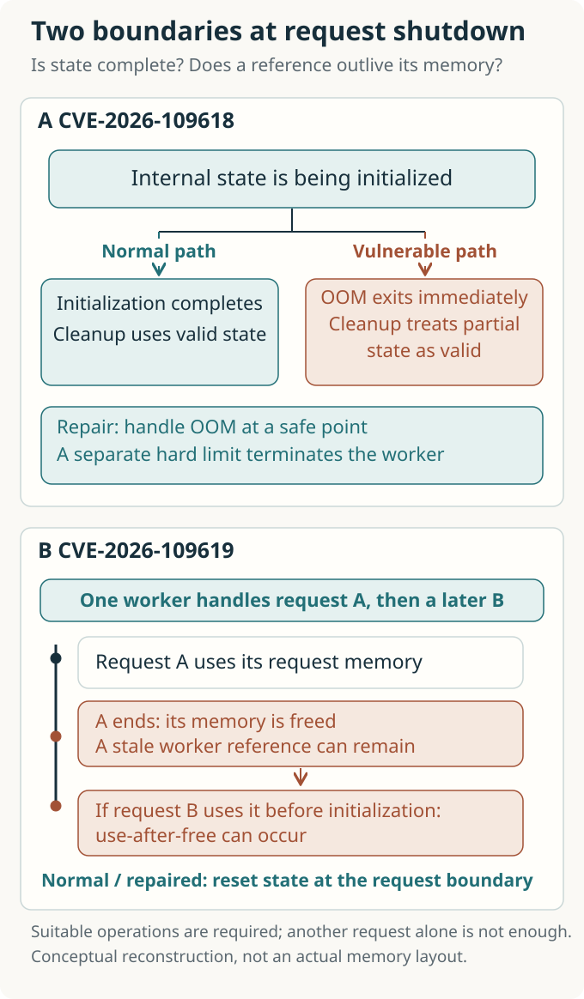

The Time to Repair: What PHP’s Security Crisis Reveals About AI Risk
AI helped connect flaws in longstanding software to working attacks. Following PHP’s memory errors and emergency patches reveals what else must change for faster discovery to make the internet safer.

Contents
- How should a failed request end?
- AI changed the meaning of an old warning sign
- What the headline numbers actually count
- The clock was running before disclosure
- Do more discoveries shorten the repair queue?
- The distance between releasing a patch and protecting a user
- When the next discovery becomes routine
- References and reading scope
- Authorship and verification scope
What happens when a website’s login screen is properly secured, but the software that produces it fails first?
PHP’s security announcement on October 21, 2026 made that question concrete. PHP is a language servers use to retrieve posts, calculate shopping carts, and assemble pages to send to a browser. These flaws lay beneath an individual shop’s login code, in the PHP engine that executes it. PHP reported that unauthenticated remote code execution (RCE) was possible even before application code began running in mod_php, a configuration that connects the engine to the Apache web server as a module. Carefully written website code alone could not prevent this problem. [1, 2]
News that AI had helped uncover vulnerabilities in this old foundation soon became a sweeping warning. To understand the event, though, we need to unpack the word “discovery.” Noticing an unusual error, proving an attack is possible, observing an attack attempt, and confirming a compromise are different events. Between them lie researchers’ experiments, maintainers’ decisions, distribution packages, and operators’ servers.
The central question of this review is whether the internet can repair flaws as quickly as AI helps find them. The episode shows AI security capabilities at work on a real task. It also shows how many people are involved in turning a discovery into protection.
How should a failed request end?
When a browser requests a page, the server sets aside working space for that request. Once processing finishes, it releases the space and accepts another request. The running process that does this work is called a worker. A worker can handle many requests in succession, so its lifetime differs from the lifetime of memory belonging to any one request.
Trouble begins when the work ends abnormally. In PHP, an out-of-memory error, or OOM, can occur when a request reaches its configured memory_limit, even while the server still has physical memory available. The old engine could abruptly leave the code it was executing. If that happened halfway through preparing an internal structure, later request-cleanup code could treat the unfinished structure as complete. This is the central problem in the first vulnerability, CVE-2026-109618. [2, 4]
In the second vulnerability, CVE-2026-109619, the lifetimes of request state and memory can fall out of alignment. Memory belonging to request A is released, yet a reference retained by the worker can still point to it. When the same worker receives request B, using that reference before normal initialization can make it treat already-freed memory as valid data. This is called use-after-free. The two vulnerabilities are related, but interruption in the second problem is not limited to OOM. [3]
Imagine finishing a task and throwing away a note, while the index for your next task still lists that note’s location. If another sheet has taken its place, following the index sends you to the wrong information. A program reads and modifies data by following addresses, so a mismatch in lifetimes can cause memory corruption. The analogy explains the expiry of a location’s validity; a stale reference by itself does not guarantee a successful attack.
Read the upper part of the figure as cleanup consuming data whose initialization was interrupted. The lower part shows request B following a surviving reference after request A’s memory has been released. Both concern a request boundary that should remain safe.

The fixes can be understood in the same terms. When the configured memory limit is exceeded, the engine handles the error at a safe point in the virtual machine instead of immediately interrupting an internal operation. Exceeding a higher, hard limit terminates the worker immediately. Internal state that must not survive a request is also reset. The repair restores a condition inside the engine: a failed task must not contaminate the next one. Removing a memory limit or hiding an error message would not achieve that. [2–4]
A successful attack can execute code with the web worker’s permissions. That does not automatically grant the operating system’s highest administrative privileges, but the data and secrets accessible to a worker can still make the damage substantial. PHP-FPM, which runs the engine in separate worker processes, also needs attention. Demonstrated FPM paths require suitable application behavior, so the mod_php demonstration before application execution cannot be generalized to every configuration. [2, 3, 5]
AI changed the meaning of an old warning sign
An account in which humans saw nothing for decades and AI finally found the flaw would miss an essential part of the history. According to the PHP Foundation, signs of the OOM problem had already been identified during follow-up work on a 2024 audit. Concrete remote attack paths were not established, however, and proposed fixes carried costs involving compatibility, denial of service, and changes to third-party extensions. The Foundation acknowledged that staffing and decision-making problems had delayed repair. [5]
In 2026, those warning signs acquired new evidence. Calif describes an audit begun in late July, guided by a researcher’s knowledge of earlier PHP vulnerabilities and increasingly focused questions. On August 11, it reported remote code execution arising from the same OOM root cause. Wiz separately contributed demonstrations of several paths and helped with remediation. Showing how an existing flaw leads to an actual attack changes the urgency and priority maintainers assign to it. [5, 6, 7]
OpenAI says Calif used GPT-5.6 Sol. Wiz reports using its own tools alongside Gemini 4 Argon and GPT-5.6 Sol, with models contributing to analysis, repeated experiments, exploit validation, and patch verification. Here, AI enters the work of narrowing and testing hypotheses. If attacks once too complex to make practical can be tested with less effort, defenders have stronger reasons to re-examine old code as well. [7, 8]
These public accounts are not controlled experiments in model performance. They do not establish how models compare under equal time and cost, how many attempts failed, or how much total expert time was required. Wiz’s comparison between one researcher’s week and the months a world-class team might previously have needed cannot be read as a measurement under matched conditions. What the record supports is that work combining models and experts produced real vulnerabilities and patches. Assigning an independent contribution to a particular model, or concluding that anyone could perform the same attack, would require stronger evidence. [6–8]
The nature of the AI risk now becomes clearer. This was a case of AI-assisted investigation changing the practical threshold of exploitation in existing, widely trusted infrastructure. The vulnerable PHP code was not newly written by AI. Attackers and defenders can both use these capabilities. Their net advantage depends on more than a model’s ability to find flaws.
What the headline numbers actually count
News coverage compressed this change into a few striking claims. AP emphasized the breadth of internet infrastructure involved; Axios foregrounded AI’s discovery. A scientific review can add value by asking what the large numbers actually count. [14, 15]
| Widely circulated claim | What the evidence establishes | What it does not establish |
|---|---|---|
| Around 70% of the web | W3Techs reported PHP usage of 69.3% on October 23 among websites whose server-side language it could identify. [9] | The number of exploitable installations or servers, the unpatched share, or the compromise rate |
| Severity of 9.2 | The CVSS v4.0 severity score in both official advisories, which also specify attack complexity and additional conditions. [2, 3] | A 92% probability of attack success or the total scale of damage |
| Mass attacks within 15 minutes of disclosure | A forecast quoted before the patch was released. On October 22, Sansec lowered its initial assessment of the likelihood of mass exploitation. [11, 16] | A measured starting time for widespread compromise |
| Attacks before disclosure | AWS reported attempts reaching its sensors from October 17 onward. [10] | Success against real servers or whether attackers used AI |
These distinctions help us assess the threat accurately. Incomplete public exploit code failing against a default installation does not invalidate researchers’ working demonstrations. Equally, success in several tested settings does not mean the same input works against every PHP installation on the internet. The existence of a vulnerability, an exploit’s portability, and the harm it causes require separate measurements. Sansec’s revised assessment illustrates the distance between them. [11]
The material reviewed by the cutoff date cannot establish a worldwide total of successful compromises or the monetary harm AI prevented. Leaving those quantities unfilled makes it easier to read subsequent observations correctly.
The clock was running before disclosure
Publishing every detail immediately after finding a vulnerability can leave users exposed while fixes are still being prepared. Coordinated vulnerability disclosure gives developers time to repair the software and distributions and hosting providers time to prepare updates. At the same time, widening the circle of people who know the secret raises concerns about leaks and independent rediscovery. OpenAI’s proposed response process similarly puts maintainers at the center of preparations with relevant organizations before publication. It is a proposal from a participant in this response, rather than a universally applicable standard with independently demonstrated effectiveness. [8]
The PHP Foundation says spreading information prompted it to bring the release forward from October 22 to October 21. Even with a fix ready, many operators cannot apply it immediately without distribution packages. Earlier disclosure reduces the burden of keeping a secret while also shortening the preparation time available to users whose updates are not ready. [5]
A more important observation reaches outside the disclosure date. AWS says MadPot, its honeypot system for observing attacks, recorded an attempt on October 17 and additional attempts before disclosure on October 21. It explicitly leaves open whether these would have succeeded against real production systems. This record does not show that attackers preceded the AI-assisted discoveries in August. It does show that we cannot assume attackers remained unaware until formal disclosure. The observation alone cannot tell us how information reached them, whether they rediscovered the issue independently, or whether they used AI. [10]
The next figure puts these dates in order. The threat clock should not be read as starting when disclosure occurred on October 21. The separate October 23 announcement remains visible too, because deployment of the first patches can overlap with investigation of further paths.

A single rule to disclose as late or as early as possible cannot remove this tension. Decisions change with the information already exposed, evidence that attacks actually work, and the distributors still preparing updates. As AI lowers the cost of reinterpreting the same clues, defenders’ preparation time becomes a resource that must be continually reassessed.
Do more discoveries shorten the repair queue?
A report arriving at a security team begins a new task. Someone must reproduce it, determine whether it shares a root cause with an earlier report, assess the real risk, and check that a fix preserves normal behavior.
In an October 14 account of its work, PHP’s security team said it had published 15 CVEs since July 1 and closed 106 reports because they were not vulnerabilities, were duplicates, or could not be reproduced. This is not a statistic showing that all 106 were AI-generated false positives. The team describes easier AI-assisted report writing increasing incoming volume, while it also uses AI to help examine reproducibility and group reports with a common cause. People make the final judgments and write or review patches. [12]
A simple principle of queues applies here. When incoming work grows without a matching increase in the capacity to verify and finish it, work accumulates. Genuine findings can wait for scarce repair staff; dismissing incorrect reports also consumes time. PHP’s data alone cannot tell us how much its queue will grow. Making reports easier to produce and making them quicker to resolve are different tasks.
Evaluating AI security tools by the number of vulnerabilities found therefore misses an important bottleneck. We also need to ask whether reproducible, valid reports increase, whether reviewer time falls, whether patches ship without regressions, and whether more installations become protected. This is why support for tools belongs alongside support for people who develop a lasting understanding of the code.
The distance between releasing a patch and protecting a user
Repairing the core code leaves a long path ahead. Distributions adapt the fix to their supported versions, while hosting providers test it across customer environments. Operators identify affected installations, update them, and check that running processes actually use the new code. NCSC advised organizations to identify PHP inside products and internal systems and follow suppliers’ updates. A web application firewall can block some requests and buy time, but it cannot be treated as a substitute for repairing the engine. Cloudflare’s deployed protections are an example of this intermediate defense. [13, 17]
Follow the figure from discovery to updated running processes along each path. A paper or press release draws attention to the earlier stages, but protection for a user is completed at the final installation. The bottom box shows that attackers can analyze publicly available information too. They seek targets where an attack’s conditions hold, while defenders must repair the varied environments they manage. This is a difference in the structure of the work, not a finding that attackers are faster in every setting.

For small organizations, the difficulty extends beyond access to a capable model. They may not know where PHP is embedded, may fear an update will interrupt essential work, or may lack the budget to replace an unsupported product. NCSC’s call to prepare for a “vulnerability patch wave” addresses the possibility that accumulated technical debt will return as many simultaneous repair tasks. Automation can reduce repetitive work, while testing, recovery, and responsibility for services that cannot tolerate disruption still need to be arranged. [18]
The questions for further research and policy become more concrete. Does providing models to a group shorten the time to actual deployment? How large is the protection gap between organizations receiving advance information and those outside the disclosure circle? Do fixes reach unsupported products and the last installations run by small operators? An improved median can coexist with installations left exposed for a long time; that tail needs separate attention. These are questions to measure, not conclusions already established by this event.
When the next discovery becomes routine
The emergency releases were PHP 8.5.12, 8.4.27, 8.3.36, and 8.2.35. Distributions can backport security fixes while retaining an earlier version number, so a number alone cannot settle the status of an individual system. The October 23 follow-up concerns a rare combination: upload-progress tracking remains enabled while session serialization is set to different methods in configuration and during application execution. PHP advised disabling upload-progress tracking until the next regular release, while explaining that applications not making the runtime change could leave it enabled. This does not invalidate all of the October 21 patches, nor does one update remove the need to follow later advisories. [1, 11]
This continuing process resembles scientific research: demonstrate a path, repair its cause, then vary related conditions to look for paths that remain. In security, that process overlaps with systems already in operation. As AI broadens the search, regression testing, safe failure handling, and designs that contain the consequences of a flaw become more important too. NCSC’s proposal to pursue memory safety and isolation alongside patching capacity points in this direction. It is not a promise that immediately rewriting all of PHP in another language would solve the problem. [18]
This review proposes three kinds of evaluation. First, compare how much AI increases valid discoveries under equal budgets and expert time. Second, record separately the time from discovery to a patch and to actual deployment. Third, examine new failures and remaining attack paths after the update. The aim is to make “What did AI find?” and “Who became safer as a result, and when?” parts of the same research question.
In the PHP episode, discovery and repair moved through different systems, at different speeds. Progress in tools that demonstrate exploitability brought maintenance, coordinated disclosure, and distribution capacity into focus. Return to the login screen at the beginning: its safety depends on the engine processing requests below it and on the process that delivers repaired code to a real server. Whether an AI-discovered crack becomes a warning of the next disaster or an opportunity to repair an old foundation also depends on how well we repair those connections.
References and reading scope
- PHP, 2026 News Archive. October 21 security announcement and fixed versions; October 23 “Informational advisory: Session upload progress.” The dates of these developing announcements were kept distinct.
- PHP, RCE via OOM corruption · GHSA-w8hw-w9fx-j79w. CVE-2026-109618: cause, demonstrated scope, fixes, and CVSS fields. The Foundation’s retrospective and the individual advisory describe the scope of OOM demonstrations on FPM differently; the article retains the more narrowly confirmed conditions.
- PHP, RCE via stale global state · GHSA-6wmf-4rv5-p3rp. CVE-2026-109619: request lifetimes, FPM conditions, worker privileges, and scope of fixes.
- PHP Manual, memory_limit. Soft and hard limits introduced in the October 21 releases.
- The PHP Foundation, Today’s PHP Security Release, and How We’re Strengthening PHP Security. October 21, 2026. Maintainers’ retrospective on warning signs in 2024, repair difficulties, and disclosure coordination.
- Calif, A tale of two PHP remote vulnerabilities. October 21, 2026. Historical clues and the researcher’s investigation, treated as the security research firm’s own account.
- Wiz Research, PHP2Shell: AI uncovers critical RCE vulnerabilities affecting 70% of the Internet. October 21, 2026. Demonstrations, AI use, and timeline. The headline’s 70% and the comparison of work durations are examined separately in the article.
- OpenAI, Patch the Planet: global response coordination as agents uncover critical vulnerabilities. October 21, 2026. Model use, maintainer-led response, and a proposed disclosure process; a statement by a participating company.
- W3Techs, Usage statistics of PHP for websites. Displayed value and denominator on October 23, 2026. This daily survey does not measure compromise.
- AWS, Amazon Threat Intelligence identifies PHP2Shell exploitation prior to public disclosure in MadPot. October 21, 2026. Sensor observations on October 17 and 21, with uncertainty about success.
- Sansec, PHP2Shell: PHP RCE. Published October 21, assessment revised October 22, 2026. Initial forecasts and assessment of public proofs of concept were kept distinct.
- Alexandre Daubois, How the PHP Security Team Handles Your Reports. October 14, 2026. “What we’ve shipped since July,” “The tooling,” and “About AI-written reports.”
- NCSC, Critical security issue affecting PHP. October 21, 2026. Affected systems and response priorities.
- AP, What to know about the AI-detected security bug impacting wide swaths of the internet. October 22, 2026. Used only for the reporting perspective in publicly available search summaries, not treated as a full reading or analysis of the original article.
- Axios, The internet’s hidden security nightmare — and how AI exposed it. October 22, 2026. Used for news framing; technical judgments rely on the primary sources above.
- PC Gamer, “We expect mass attacks to start within 15 minutes of the release”. October 21, 2026. Used only as the source of a forecast made before release.
- Cloudflare, Cloudflare deploys protections against php2shell vulnerability. October 21, 2026. A report of its own defenses, rather than a measurement of their effect across the whole internet.
- Ollie Whitehouse / NCSC, Preparing for a ‘vulnerability patch wave’. May 1, 2026. Policy background on technical debt, updating capacity, memory safety, and isolation.